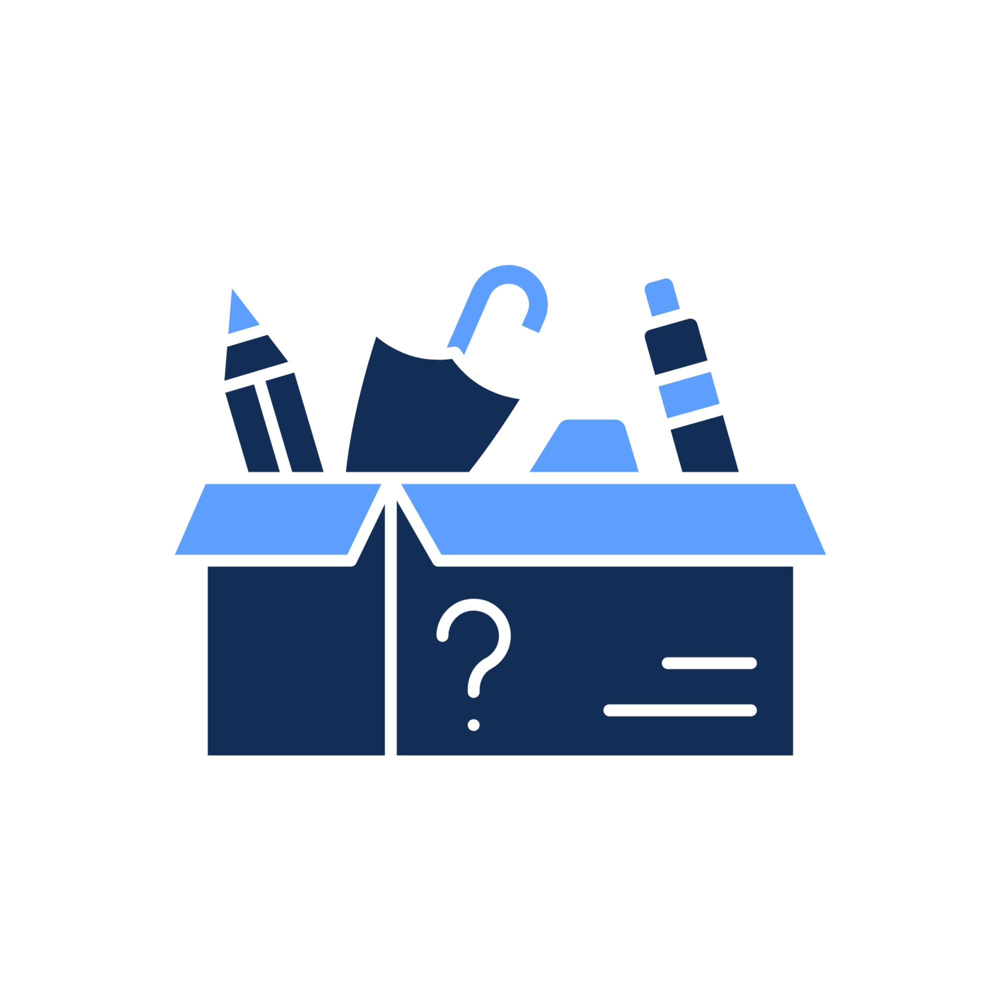

Lost & Found,
But make it easy.
Find what’s missing. Return what’s not yours.
A place where lost items find their way back to their owners

How It Works
Three simple steps to recover your lost items or return found ones
Post Where You Lost or Found the Item
Specify the school area, classroom, or campus facility where you last had your item.
Search Lost or Found Items by Location
Search found items by classroom, campus facility, or school transportation.
Get Matched & Recovered
Wait to be contacted and reconnect with your lost item quickly and securely.
TRUST & INTEGRITY
A Connected School Community
Connecting the entire school community to ensure misplaced belongings find their way back to their rightful owners.
- School offices manage items efficiently
- Connect directly with the finder
- Safe and organized recovery process